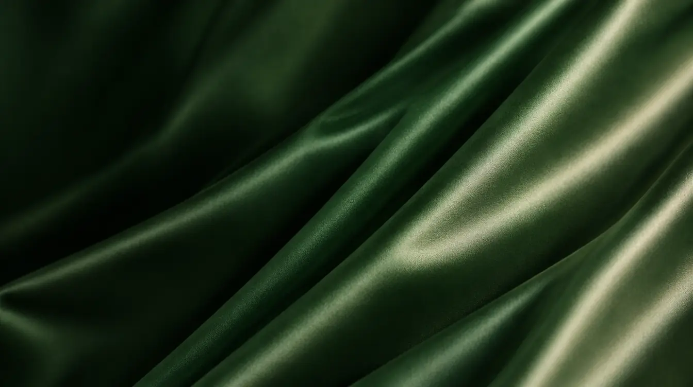

Glass pane
blur 26 · saturate 1.6forest-tinted, grain, a sheen that follows the pointer<optimal-film> · forest satin through fluted glass, with glass panes
Words on the shade, at the left. The reeds lean 17°, about seven across.
Glass pane
blur 26 · saturate 1.6forest-tinted, grain, a sheen that follows the pointerRadius
20 px--radius-glass, only for panes over filmSources · assets/film/

Attributes and defaults
| src, poster | The film and its still. The still shows until the film has a frame, and stays if WebGL or the film is unavailable. |
| reeds = 7 | Reeds across the frame. Each is clamped to 128–300 px. |
| strength = 0.7 | How far each reed bends the film. It settles in from 1.3 when it first shows and thickens as it scrolls away. |
| still | Never play; draw the glass once. Reduced motion does the same. |